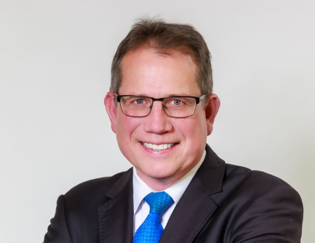

Jeff Olufson
Trustee
Jeff Olufson represents the Hibiscus Coast Cricket Club, of which he is a life member. A founding trustee of MCSCT, Jeff’s involvement with Metro Park dates back to 2013. He brings decades of community sport experience to the Trust, with a long record of service across the Hibiscus Coast contributing to club development, youth participation and collaborative facility planning. Jeff is committed to strengthening local sport through sound governance, strategic investment and accessible opportunities for families across the region.